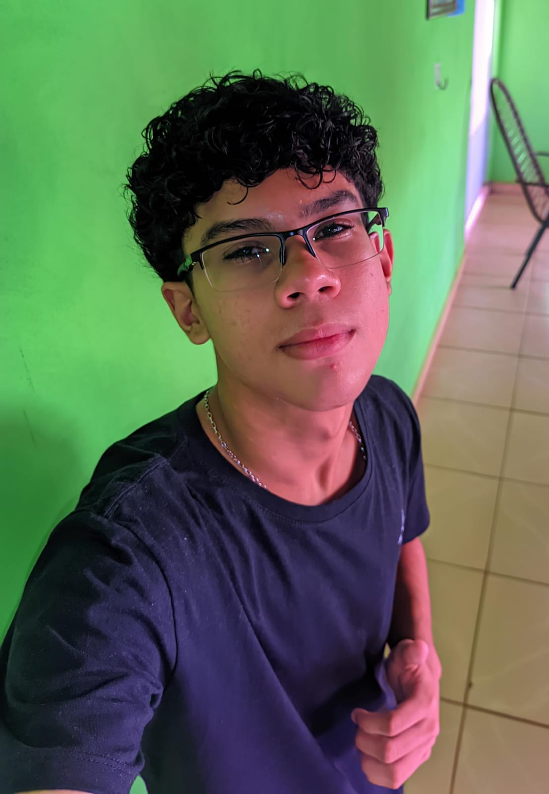

Olá! Eu sou Giovany Freitas
Estudante em busca do desenvolvimento Full Stack
Sou apaixonado por tecnologia e motivado pelo desejo de transformar pensamentos em projetos reais, crio cada projeto com lógica, criatividade e propósito.
Minha trajetória:
Tudo começou com o meu primeiro contato com a tecnologia. Lembro do momento em que ganhei meu primeiro tablet — junto com ele vieram jogos, diversão e, principalmente, curiosidade.
Passei a me perguntar como um jogo é criado, como algo pode sair de uma simples linha de código e se transformar em uma experiência completa. Foi assim que comecei a desenvolver meus primeiros jogos 2D, ainda pelo tablet, explorando cada detalhe como se já soubesse o próximo passo.
Com o tempo, a programação deixou de ser apenas curiosidade e se tornou um espaço onde minha criatividade encontra possibilidades infinitas.
Hoje, sigo nessa área não como desenvolvedor de jogos, mas como desenvolvedor web, buscando criar soluções completas e funcionais.
Interesses e Hobbies:
Tenho grande interesse por tecnologia, lógica e resolução de problemas, áreas que reforço tanto na programação quanto em jogos e desafios mentais.
Fora do ambiente digital, pratico jiu-jitsu, o que fortalece minha disciplina, resiliência e foco — qualidades que levo também para minha evolução como desenvolvedor.
Busco aprender algo novo todos os dias, mantendo constância nos estudos de programação, e nos momentos livres gosto de ouvir música e interagir com outras pessoas.
Objetivos pessoais e profissionais:
Meu principal objetivo é evoluir constantemente como desenvolvedor, adquirindo experiência prática e aprimorando minhas habilidades tanto no front-end quanto no back-end, com foco em me tornar um desenvolvedor Full Stack.
Busco, nos próximos meses, ingressar no mercado de trabalho como freelancer, desenvolvendo projetos reais que me permitam crescer profissionalmente e entender melhor as demandas do mercado.
A longo prazo, pretendo aprofundar meus conhecimentos na área de tecnologia, incluindo a possibilidade de cursar Ciência da Computação, consolidando uma base sólida para minha carreira.
No âmbito pessoal, mantenho o compromisso com a disciplina e a constância nos estudos, buscando evolução diária e equilíbrio entre desenvolvimento técnico e crescimento individual.
Linguagens:


Ferramentas:

IDEs: